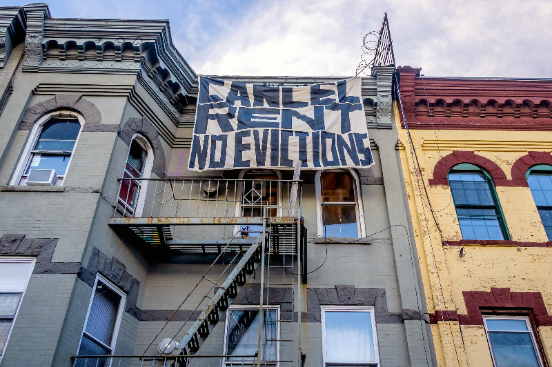
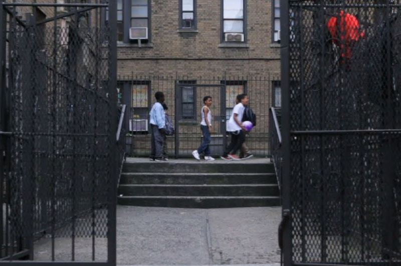

Even before the initial pandemic, there were already 43,000 people living in family shelters in New York City in 2019, with about 25,000 of those people being children and teens. According to campaigners, the number of public school children suffering housing instability has remained over 100,000 for the past five years, with nearly 111,000 kids experiencing homelessness for the 2019-2020 school year. As staggering as that number is, it represents a 2.2 percent drop from the previous year. Eighty-five percent of students facing homelessness were Black or Hispanic.




